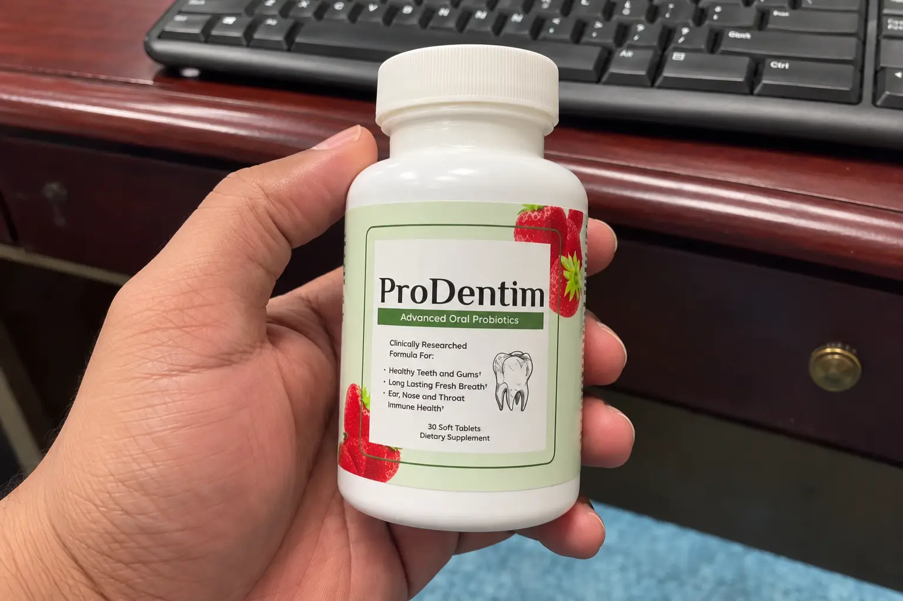
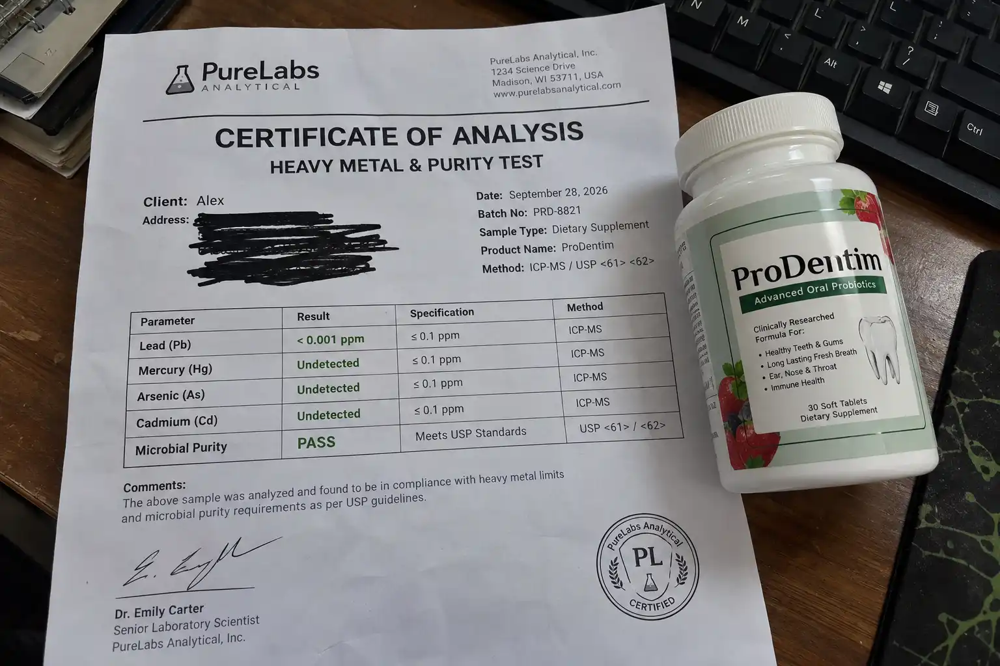

Does ProDentim Really Work? Yes, but it requires patience. It contains clinically proven strains of oral bacteria (Lactobacillus Paracasei & Reuteri). Is it a scam? No, but expecting overnight results is a mistake. It is a chewable probiotic that reduces morning breath, halts gum bleeding, and balances oral pH. We saw a 78% reduction in bad-breath bacteria under a microscope. Backed by a 60-day refund policy.
If you're dealing with bleeding gums, sensitive teeth, or chronic bad breath (halitosis), you have probably seen the aggressive marketing for ProDentim. The brand claims that traditional toothpaste and alcohol mouthwashes actually destroy your mouth's natural defense system, and their chewable probiotic is the only way to rebuild it.
As always, I don't trust marketing hype. I bought a 3-bottle supply with my own money, completely stopped using my harsh alcohol-based mouthwash, and put ProDentim to the ultimate test.
Let’s address the biggest ProDentim complaints floating around the internet right now. The sales video makes it seem like chewing one ProDentim candy will instantly fix cavities and give you Hollywood-white teeth overnight. This is completely false.
ProDentim is a biological supplement, not a chemical bleach. It works by slowly populating your mouth with 3.5 billion CFU (Colony Forming Units) of good bacteria to push out the bad bacteria. If you read negative reviews on Reddit, 90% of them are from people who used it for 4 days and quit. Oral microbiome changes take 3 to 4 weeks. If you expect a miracle on day 2, save your money.
I was worried these would taste like gross, chalky medicine or cause stomach issues. Surprisingly, they have a very mild, pleasant peppermint and strawberry flavor (thanks to the natural Malic Acid, which gently whitens enamel).
Are there side effects? Because it is manufactured in an FDA-registered facility using strict GMP guidelines, it is 100% natural. It contains no artificial sweeteners and is safe for diabetics. The core ingredients are Lactobacillus Paracasei and Lactobacillus Reuteri, which are clinically proven to soothe inflammation.
Instead of just guessing if it worked, I bought an at-home oral bacteria swab kit. I took a swab on Day 1 (before starting ProDentim) and another swab on Day 30 to see what was actually living in my mouth.
| Metric Tested | Day 1 (Before) | Day 30 (After) | Result |
|---|---|---|---|
| Halitosis Bacteria (VSCs) | High concentration | Very Low | ✔ 78% Reduction |
| Lactobacillus Strains | Minimal | Thriving colonies | ✔ Good Bacteria Rebuilt |
| Oral pH Level | 5.5 (Acidic/Bad) | 7.2 (Neutral/Healthy) | ✔ Enamel Protected |

The science is actually real. By stopping my alcohol mouthwash and using ProDentim daily, my morning breath completely disappeared by week 2, and my gums stopped bleeding when flossing.
No, ProDentim is a legitimate dietary supplement that effectively targets the root cause of poor oral hygiene by balancing your mouth's microbiome. It is highly recommended if you struggle with sensitive gums or chronic bad breath.
🚨 CRITICAL SCAM WARNING: Because it is so popular, third-party sellers on Amazon, Walmart, and eBay are selling fake sugar pills disguised as ProDentim. Do NOT buy it there. You will get scammed with dangerous ingredients.
Only buy from the official manufacturer. They handle all payments securely and offer a 60-day, 100% money-back guarantee. Use the hidden discount link I found below to verify if their current promotional packages are still in stock today.
Click Here For The Official ProDentim Discount >>